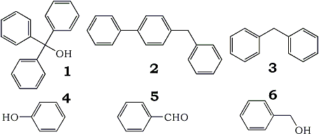

I. Introduction
A. Background
The benzophenone/sodium still is a widely used method to produce water, oxygen, and peroxide free solvents
for organic synthesis1,2. Most organic labs routinely use this method to dry their solvents that
are used in moisture sensitive reactions. The most popular solvent for these reactions is tetrahydrofuran.
However, despite widespread use there is no information available in the literature on how dry or oxygen free
the solvent really is from this method. At Mallinckrodt Baker R&D we have developed a process to produce
Ultra dry THF (less than 10 ppm water and peroxides), a study was initiated to compare our new material with
material produced from the benzophenone/sodium still.
B. Benzophenone/Sodium Still
A literature search on the benzophenone/sodium still found only one reference to date on the
subject1. The reference was from Chemical and Engineering News in 19781. The
procedure in the article describes adding 5 grams of sodium, and 30 grams of benzophenone to 3 liters of
tetrahydrofuran1. The mixture is then refluxed under inert gas until the blue color of the
benzophenone ketyl forms. The author of the article states that "once the blue color forms, distillation
of the solvent will yield very pure, dry, oxygen and hydroperoxide free ether"1. However, the
author provides no data on the purity or water level of the solvent produced from this method. We decided to
carry out a study on the benzophenone/sodium still to obtain these answers.
II. Results and Discussion
A. Benzophenone/Ketyl THF Still Purity Study
We set up a THF still following the exact procedure as in Chemical and Engineering News
reference1. Analysis of the THF produced from the still gave 10.1 ppm of water with no dissolved
oxygen or hydroperoxides. The GC analysis of the tetrahydrofuran from the still found that it contained 150
ppm of benzene as an impurity. A study was initiated to determine the source of the benzene. We tested both
the tetrahydrofuran, and benzophenone starting material and found no benzene present. This indicated that the
source of the benzene was from the chemical breakdown of the benzophenone in the still. A GC/MS analysis of
the THF sodium/benzophenone mixture was carried out to help determine the possible mechanism of benzene
formation. The GC/MS analysis showed compounds such as 1, 2,
3, and 4.

These compounds are formed by some type of free radical
reaction with phenyl radicals. The probable mechanism is the carbonyl phenyl group bond breaks forming phenyl
radicals, and benzaldehyde. The benzaldehyde (5) then either undergoes reduction to benzyl
alcohol (6), or further reaction with the phenyl free radicals.
We carried out a test to determine if the benzaldehyde is reduced in the sodium/benzophenone still.
Benzaldehyde (5) was added to THF in the presence of sodium, the mixture was then refluxed.
We found that benzaldehyde (5) was reduced to the benzyl alcohol (6).
Additional further GC/MS analysis was carried out to look for the benzaldehyde (5) and benzyl
alcohol (6). Unfortunately, neither benzyl alcohol nor benzaldehyde was detected. One
possible explanation is the benzaldehyde and benzyl alcohol rapidly undergo further reactions in the
sodium/benzophenone still to prevent their detection. For example, the reaction of benzaldehyde with phenyl
radicals could have resulted in the formation of compounds (1), and (2).
Another possible pathway would be rapid polymerization of these compounds.
B. Effect of Water on the Benzophenone Ketyl
The next study was to determine what effect water had on the decomposition of the benzophenone ketyl. The
benzophenone ketyl was produced in THF at a concentration of 630 ppm. The loss of blue color would indicate
decomposition of the ketyl. Titration of the ketyl with water showed that a full 100 mol% of water was
required to quench the blue color. This indicates that water reacts in a simple one to one mole ratio with the
ketyl. Therefore, the blue color of the ketyl does not necessary indicate super dry conditions.
For
example in the typical procedure the ketyl is produced at a concentration of 6311 ppm in THF. When a small
amount of water is added to a sample of this mixture to increase the water concentration, the solution will
still remain blue since until all of the ketyl decomposed. Thus it would be possible to have a concentration
of 100 ppm water in the solvent, and if the ketyl was not used up, it would still have the blue ketyl color.
C. Effect of Oxygen on Benzophenone Ketyl
The final study was to determine how sensitive the ketyl was to oxygen. An experiment was carried out where
the ketyl was titrated with oxygen. We found that the color was quenched with 8 mole% of oxygen. This data
shows that the benzophenone ketyl reacts catalytically with oxygen and not on a one to one mole ratio as water
does. Thus the benzophenone ketyl is much more sensitive to oxygen than to water.
II. Conclusion
Drying and purification of THF and other solvents is a widely used practice in many labs. Solvent produced
from the sodium/benzophenone still is believed to be of the highest quality. Despite the fact there was no
real data on the actual quality of the solvent. This belief has been passed down from lab worker to lab worker
as the method of choice for producing anhydrous solvents for organometallic synthesis. Our studies have shown
that while the THF produced from the still is free of oxygen and low in water (10 ppm), it does contain
benzene contamination. The presence of benzene could interfere with critical applications. Additionally, the
blue color of the benzophenone ketyl is not a very reliable indication of anhydrous conditions. These results
are very significant since they provide the chemist real information on the purity of the tetrahydrofuran
produced from the sodium/benzophenone still. In contrast our new THF is oxygen free, contains less that 5 ppm
of peroxides. Our water content is less than 10 ppm and our material is free of impurities such as benzene.
Ph2CO + Na -> Na[Ph2CO]
Caution: Sodium metal is highly reactive. It should be handled under a covering layer of mineral oil and an atmosphere of dry nitrogen.
Procedure
A 50 mL, two-necked, round-bottomed flask is removed from a hot oven and flushed with nitrogen. A sample of benzophenone (0.091 g, 0.5 mmol) together with 20 mL of freshly distilled and deoxygenated tetrahydrofuran (THF) and a stirring bar are placed in the flask. A small lump of sodium metal (~0.5 g) is cut into smaller pieces directly into the flask against the emergent stream of nitrogen. The second neck of the flask is then closed with a septum cap. The mixture is stirred for 0.5-2 h in the stoppered flask under nitrogen until the initial ultramarine blue is replaced by an intense blue-purple color. The resulting solution is ~0.025 mol·L-1 in Na[Ph2O]. This solution may decolorize in 1 or 2 days time but it can be regenerated by addition of more benzophenone.
Properties
A solution of sodium benzophenone ketyl is exceedingly reactive, and is immediately decolorized by air or traces of water, alcohols, and so on. The solution should therefore be kept under nitrogen at all times. Aliquots may be removed using a dry syringe via the septum cap. Under these conditions, the solution appears to be stable for ~2 days.